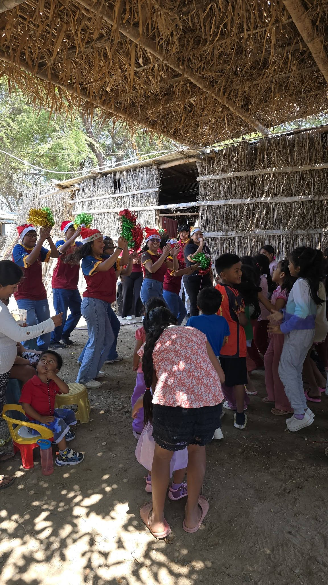
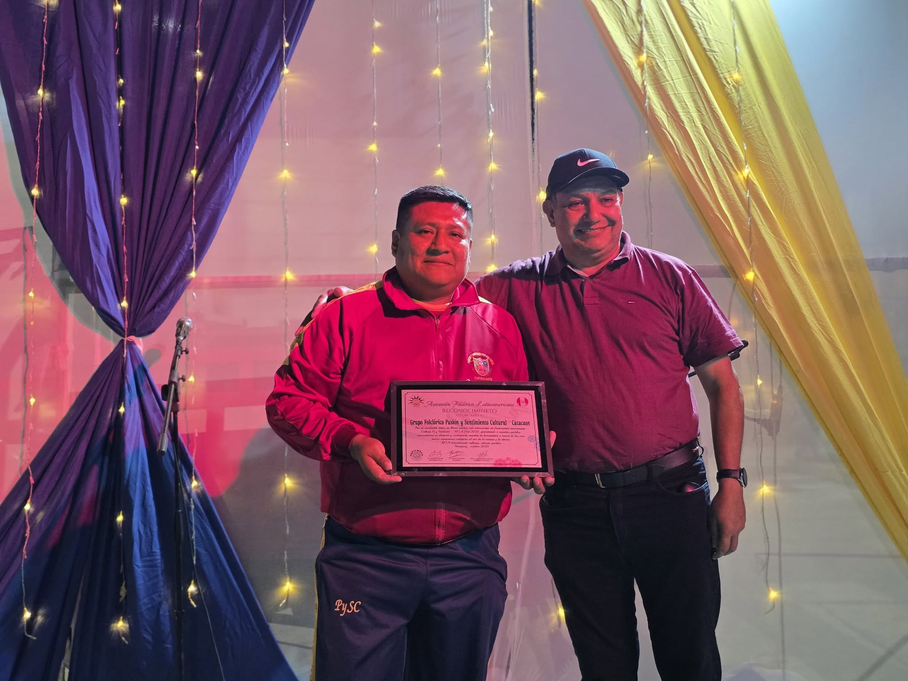

Nuestra misión
Promover, preservar y difundir el folklore peruano mediante la formación artística, proyectos culturales y la puesta en escena de las tradiciones que forman parte de nuestro patrimonio.
Vivimos nuestras tradiciones. Inspiramos nuevas generaciones.

Somos una agrupación cultural nacida en Catacaos que trabaja por preservar, enseñar y compartir las expresiones tradicionales del Perú.
A través de la formación artística, las presentaciones, los proyectos comunitarios y el trabajo colectivo, fortalecemos nuestra identidad y creamos espacios donde niños, jóvenes y adultos pueden encontrarse con sus raíces.
Más que un grupo de danza, somos una familia cultural que cree en el folklore como una herramienta de unión, aprendizaje y transformación social.
Cada paso que damos lleva consigo la memoria, la identidad y el orgullo de nuestras tradiciones.
Cada ensayo, cada presentación y cada proyecto nacen del compromiso de mantener vivas nuestras tradiciones y compartirlas con las futuras generaciones.
Promover, preservar y difundir el folklore peruano mediante la formación artística, proyectos culturales y la puesta en escena de las tradiciones que forman parte de nuestro patrimonio.
Ser una agrupación cultural referente a nivel regional y nacional, reconocida por su excelencia artística, compromiso social y la formación de nuevas generaciones que amen y valoren el patrimonio cultural del Perú.
Trabajar con pasión, disciplina y respeto para que cada actividad, proyecto y presentación contribuya a fortalecer nuestra comunidad y mantener vivas nuestras raíces culturales.
Son los principios que orientan cada ensayo, presentación, proyecto y experiencia compartida dentro de nuestra familia cultural.
Vivimos la danza con entrega, entusiasmo y amor por nuestras tradiciones, dando lo mejor de nosotros en cada presentación.
Valoramos nuestras raíces y representamos con orgullo la diversidad cultural del Perú y el nombre de Catacaos.
Crecemos como una familia, fortaleciendo la unión, el compañerismo y el respeto entre integrantes, familias y comunidad.
Compartimos conocimientos y experiencias para que nuevas generaciones conozcan, valoren y continúen nuestras tradiciones.
Trabajamos con disciplina y responsabilidad para mejorar constantemente dentro y fuera del escenario.

Trabajamos desde la danza, la formación y la gestión cultural para mantener vivas nuestras tradiciones y compartirlas con nuevas generaciones.
Desarrollamos ensayos y procesos de formación artística con niños, jóvenes y adultos, fortaleciendo la disciplina, la expresión corporal y el conocimiento de nuestras danzas.
Participamos en celebraciones, actividades institucionales, encuentros artísticos y eventos donde compartimos la riqueza del folklore peruano.
Representamos a Catacaos en festivales y concursos dentro y fuera del país, y también organizamos espacios propios para promover el intercambio y la valoración cultural.
Realizamos actividades solidarias como nuestras tradicionales chocolatadas navideñas, creando momentos de encuentro, alegría y cercanía con la comunidad.
Cada integrante aporta desde su experiencia, sus habilidades y su compromiso para hacer posible el trabajo artístico, cultural y comunitario de la agrupación.
En Pasión y Sentimiento Cultural no solo formamos bailarines. También formamos instructores, organizadores, comunicadores y personas comprometidas con cada detalle que ocurre dentro y fuera del escenario.

Fundador de Pasión y Sentimiento Cultural y principal impulsor de su desarrollo desde 2009. Su compromiso con el folklore, la formación artística y la promoción de nuestras tradiciones ha guiado el crecimiento de la agrupación a lo largo de los años.
La enseñanza no depende de una sola persona. Varios integrantes con experiencia acompañan los ensayos, comparten conocimientos, corrigen técnicas y apoyan el aprendizaje de niños, jóvenes y adultos.
Las propuestas de actividades, presentaciones y proyectos se revisan en equipo. Los integrantes con mayor experiencia evalúan su viabilidad, aportan ideas y organizan festivales, concursos y acciones culturales.
Un equipo se encarga de las redes sociales, fotografía, producción audiovisual, convocatorias, diseño y desarrollo de las plataformas digitales que permiten compartir nuestro trabajo con más personas.
Para cada presentación se organizan equipos de vestuario, escenografía y logística. Los integrantes mayores ayudan a preparar al elenco y a cuidar que cada puesta en escena se presente con orden, identidad y calidad.
Todos participamos, todos aportamos y todos somos responsables de representar con orgullo el nombre de Pasión y Sentimiento Cultural.

Más que una actividad artística, el folklore es una manera de preservar nuestra identidad, fortalecer nuestra comunidad y transmitir con orgullo el legado cultural que hemos recibido.
Cada ensayo, presentación y experiencia fortalece el vínculo con nuestras raíces y nos permite crecer como artistas y como personas.
Compartimos conocimientos, aprendemos unos de otros y fortalecemos nuestra comunidad convencidos de que la cultura crece cuando se transmite de generación en generación.
Cada escenario es una oportunidad para mostrar la riqueza cultural de nuestro pueblo y del Perú con respeto, dedicación y excelencia.
Formar niños, jóvenes y adultos significa sembrar hoy el amor por nuestras tradiciones para que continúen vivas mañana.
Vivimos nuestras tradiciones. Inspiramos nuevas generaciones.